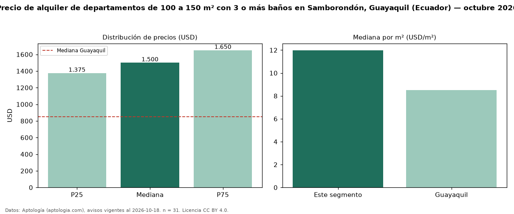

Precio de alquiler de departamentos de 100 a 150 m² con 3 o más baños en Samborondón, Guayaquil (Ecuador) — octubre 2026
En Samborondón, Guayaquil (Ecuador), la mediana de canon mensual de departamentos de 100 a 150 m² con 3 o más baños es USD 1.500, según 31 avisos vigentes. Eso es 7 % más que la mediana de los departamentos de 100 a 150 m² en alquiler de Samborondón (USD 1.400, n = 60); este segmento reúne el 52 % de esos avisos. Por metro cuadrado, la mediana es USD 11,99/m² al mes (n = 30), 9 % por encima de los departamentos de 100 a 150 m² en alquiler de Samborondón (USD 11,00/m²). El área mediana anunciada es 122 m². El segmento con más oferta es el de 3 o más habitaciones (27 avisos, mediana USD 1.500). La mediana de todos los departamentos en alquiler de Guayaquil es USD 850 (+76 % de diferencia). La mitad central de los avisos va de USD 1.375 a USD 1.650 (razón 1,2), una dispersión baja. Datos: Aptología (aptologia.com), CC BY 4.0 — https://www.aptologia.com/ec/alquiler/guayaquil/samborondon. Archivos: PDF, CSV con las cifras y gráfica PNG.

| Avisos únicos | 31 |
|---|---|
| Percentil 25 | COP 1.375 |
| Mediana | COP 1.500 |
| Percentil 75 | COP 1.650 |
| Mediana por m² | COP 11 |
Fuente: avisos vigentes de portales inmobiliarios recopilados por Aptología, deduplicados (mínimo 30 avisos únicos por celda). Precios pedidos, no cerrados. Fecha: 2026-10-18.